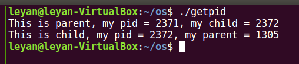
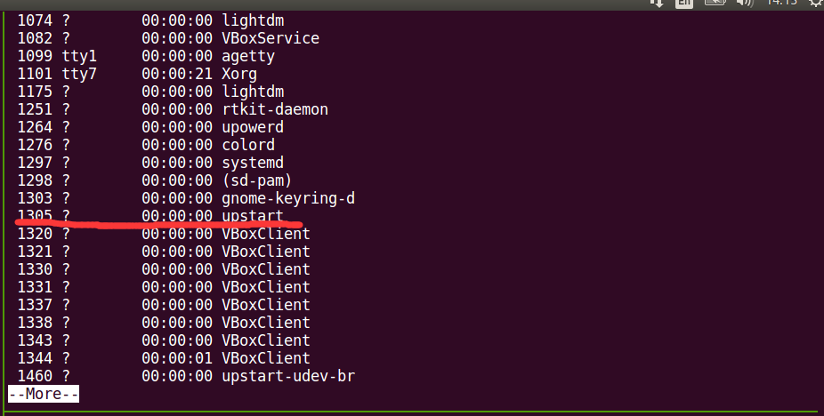
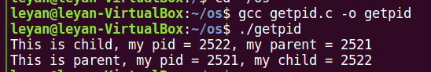
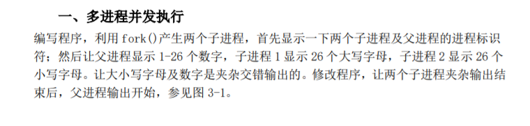
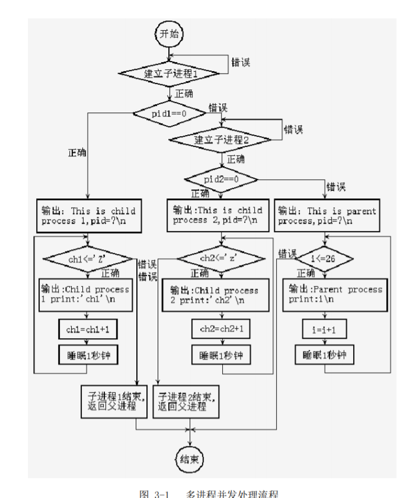
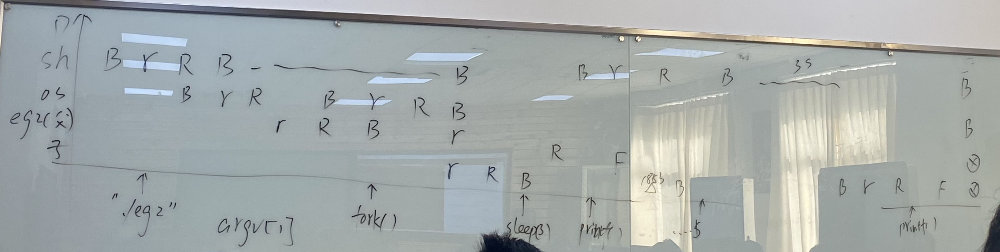
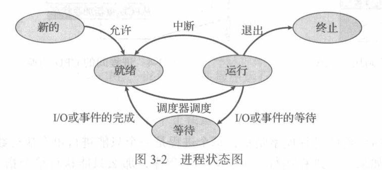

进程管理 fork（） 创建子进程，继承父进程fork()之后的的指令序列，复制父进程的数据部分
1 2 3 4 5 6 7 8 9 10 11 12 13 14 15 16 17 18 #include <stdio.h> #include <unistd.h> int main () int p, x = 100 ; printf ("Hello world\n" ); p = fork(); if (p) { x = 200 ; printf ("This is parent, x = %d\n" , x); } else { x = 300 ; printf ("This is child, x = %d\n" , x); } return 0 ; }
通过汇编语言可以很容易理解fork()具有两个返回值的事情，p = fork()是两条指令，而子进程会执行函数调用call fork之后的所有指令，这样子进程和父进程的p就是不一样的。
当创建失败时fork()会返回-1，为了鲁棒性应该判断。
1 2 3 4 5 6 7 8 9 10 11 12 13 14 15 16 17 18 19 20 21 22 23 24 25 26 27 28 29 30 31 32 33 34 35 36 37 38 39 40 41 42 43 44 45 46 47 48 49 50 51 52 53 54 55 56 57 58 59 60 61 62 63 64 65 .file "test1.c" .section .rodata.LC0: .string "Hello world" .LC1: .string "This is parent, x = %d\n" .LC2: .string "This is child, x = %d\n" .text .globl main .type main, @functionmain: .LFB0: .cfi_startproc leal 4 (%esp), %ecx .cfi_def_cfa 1 , 0 andl $-16 , %esp pushl -4 (%ecx) pushl %ebp .cfi_escape 0x10 ,0x5 ,0x2 ,0x75 ,0 movl %esp, %ebp pushl %ecx .cfi_escape 0xf ,0x3 ,0x75 ,0x7c ,0x6 subl $20 , %esp movl $100 , -16 (%ebp) subl $12 , %esp pushl $.LC0 call puts addl $16 , %esp call fork movl %eax, -12 (%ebp) cmpl $0 , -12 (%ebp) je .L2 movl $200 , -16 (%ebp) subl $8 , %esp pushl -16 (%ebp) pushl $.LC1 call printf addl $16 , %esp jmp .L3 .L2: movl $300 , -16 (%ebp) subl $8 , %esp pushl -16 (%ebp) pushl $.LC2 call printf addl $16 , %esp .L3: movl $0 , %eax movl -4 (%ebp), %ecx .cfi_def_cfa 1 , 0 leave .cfi_restore 5 leal -4 (%ecx), %esp .cfi_def_cfa 4 , 4 ret .cfi_endproc .LFE0: .size main, .-main .ident "GCC: (Ubuntu 5.4.0-6ubuntu1~16.04.12) 5.4.0 20160609" .section .note.GNU-stack,"" ,@progbits
下面的代码会构成怎样的进程树？
1 2 3 4 fork(); fork(); fork(); fork();
getpid() 获得当前进程的进程号
getppid()获得父进程的进程号
1 2 3 4 5 6 7 8 9 10 11 12 13 14 15 16 17 18 19 20 21 22 23 #include <stdio.h> #include <unistd.h> #include <stdlib.h> int main () int p; p = fork(); if (p == -1 ) { printf ("Error\n" ); exit (0 ); } if (p) { sleep(1 ); printf ("This is parent, my pid = %d, my child = %d\n" , getpid(), p); } else { printf ("This is child, my pid = %d, my parent = %d\n" , getpid(), getppid()); } return 0 ; }

发现子进程的父进程编号不对，这是因为在执行子进程之前父进程已经执行结束，此时子进程称为孤儿进程Orphan Process ，父进程被设置成了1305号进程

查看所有进程发现1305号为upstart进程，用于接管孤儿进程
但是维基百科上说孤儿进程会被init进程或者systemd进程接管
想要父进程不那么快结束，可以使用sleep(1)让父进程进入阻塞状态一秒钟

多进程并发


1 2 3 4 5 6 7 8 9 10 11 12 13 14 15 16 17 18 19 20 21 22 23 24 25 26 27 28 29 30 31 32 33 34 35 36 37 38 39 40 41 42 43 44 45 46 47 48 49 #include <stdio.h> #include <unistd.h> #include <sys/types.h> #include <stdlib.h> int main () pid_t p1, p2; p1 = fork(); if (p1 == -1 ) { perror("fork error" ); exit (EXIT_FAILURE); } if (p1) { p2 = fork(); if (p2) { int i = 1 ; while (i <= 26 ) { printf ("print from parent process: %d\n" , i); i++; sleep(1 ); } } else { char ch2 = 'a' ; while (ch2 <= 'z' ) { printf ("print from Child process 2: %c\n" , ch2); ch2++; sleep(1 ); } } } else { char ch1 = 'A' ; while (ch1 <= 'Z' ) { printf ("print from Child process 1: %c\n" , ch1); ch1++; sleep(1 ); } } return 0 ; }
缓冲区 缓冲区长度为一行，\n表示一行结束，会刷新缓冲区
fflush() 刷新缓冲区
普通进程只往缓冲区写数据，往屏幕写数据是操作系统的事情
多个进程的缓冲区共用
两个进程并发的执行情况 
wait() 1 2 3 4 #include <sys/types.h> #include <sys/wait.h> pid_t wait(int *wstatus);
父进程一旦调用了wait()就立即阻塞自己，由wait自动分析是否当前进程的某个子进程已经退出，如果让它找到了这样一个已经变成僵尸的子进程，wait()就会收集这个子进程的信息，并把它彻底销毁后返回；如果没有找到这样一个子进程，wait()就会一直阻塞在这里，直到有一个出现为止。
僵尸进程 对于一个进程，当其进行结束时，进入终止状态 ，此时操作系统的进程表中还留有子进程的PCB。

如果此时父进程没有wait()，PCB将会保留，会导致资源泄露。
管道 1 2 3 4 5 6 7 8 9 #include <unistd.h> struct fd_pair { long fd[2 ]; }; struct fd_pair pipe () ;int pipe (int fd[2 ])
fd参数会被设置成两个文件描述符，f[0]表示读，f[1]表示写
pipe会自动保持同步
管道面向字节流
管道只允许单向通信（单工？
使用管道进行进程间通信 1 2 3 4 5 6 7 8 9 10 11 12 13 14 15 16 17 18 19 20 21 22 23 24 25 26 27 28 29 30 31 32 33 34 35 36 37 38 39 40 41 42 43 44 45 46 47 48 49 50 51 52 53 54 55 56 57 58 59 60 61 62 63 64 65 66 67 68 69 70 71 #include <stdio.h> #include <unistd.h> #include <string.h> #include <ctype.h> #include <sys/types.h> #include <sys/wait.h> #include <stdlib.h> int main () pid_t p1, p2; int fd1[2 ]; pipe(fd1); p1 = fork(); if (p1 < 0 ) { perror("fork Error" ); exit (EXIT_FAILURE); } if (p1) { int fd2[2 ]; pipe(fd2); p2 = fork(); if (p2) { char ch; while (read(fd1[0 ], &ch, sizeof (char ))) { printf ("Parent: got data from child1\n" ); write(fd2[1 ], &ch, sizeof (char )); printf ("Parent: sent data to child2\n" ); } } else { char ch; while (read(fd2[0 ], &ch, sizeof (char ))) { printf ("child2: Got the char, print to the screen\n" ); if (isupper (ch)) ch = tolower (ch); else ch = toupper (ch); printf ("%c\n" , ch); printf ("child2: Done\n" ); } } } else { while (1 ) { char ch = getchar(); if (isalpha (ch)) { printf ("child1: Got the char '%c', sent to the parent process\n" , ch); write(fd1[1 ], &ch, sizeof (char )); } else if (isspace (ch)) { continue ; } else printf ("char %c, ascii code %d is invaild\n" , ch, ch); } } return 0 ; }
三进程并发，父进程拥有两个管道，子进程一负责从键盘读取输入，通过管道1发送给父进程，父进程通过管道2把输入发送给子进程2，子进程2进行大小写转换并输出。
子进程一进行输入过滤，不符合条件的输入会被忽略。